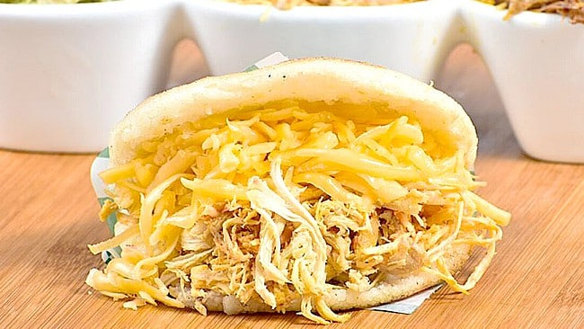

Tipos de Arepas
Arepa con Queso
Las arepas de queso son una variante muy popular de las arepas tradicionales que, además de estar rellenas de queso como su nombre lo indica, también lo tienen en su preparación volviendo la masa un poco más salada que la original
Típicamente, el queso empleado para preparar esta receta es el queso costeño (en Colombia) o el queso llanero (en Venezuela, también llamado queso de mano). Ambos se caracterizan por tener una textura más bien blanda y maleable que permite ser manipulados tanto para masas como para rellenar distintas preparaciones.
Tanto el queso llanero como el queso costeño tienen un color muy blanco y contenido de sal mayor al de quesos similares (como es el queso del tradicional queso fresco), haciendo que su presencia resalte en cualquiera sea la receta de la que forma parte.

Apera Catira
Esta es una de las arepas más populares en la mesa venezolana, y sus ingredientes asemejan a la cabellera de una mujer catira por ello su nombre su nombre peculiarmente colorido. Cabe destacar que ésta se diferencia de la arepa pelua porque está rellena de pollo desmechado y queso amarillo pero pueden tender a confundirla, por eso te explicamos cómo esta receta venezolana debe hacerse.
Arepa de Pabellon
Las arepas venezolanas son famosas por sus rellenos deliciosos y abundantes. En este receta aprenderás a realizar la arepa pabellón, que consiste en rellenar una arepa de maíz blanco con el típico plato venezolano llamado pabellón criollo, Los ingredientes son:carne mellada,caraota,platano,queso

Arepa de Perico
Perico: Picamos la cebolla en cuadritos, sofreímos hasta que esté transparente, picamos el tomate en cuadritos y lo agregamos a la cebolla, añadimos los huevos previamente revueltos, ponemos sal al gusto y revolvemos todo para que se cuaje el huevo y no se pegue de la sartén. Finalmente agregamos el cilantro y cocinamos por 3-5 minutos. Abrimos la arepa por la mitad, untamos una mitad con mantequilla o margarina, rellenamos con el perico y servimos caliente. Tips Si la masa está demasiado húmeda, añadimos harina poco a poco y continuamos amasando. Si, por el contrario, la masa se vuelve quebradiza o se desprende, añade un poco de agua. Hazlo muy poco a poco hasta que la masa tenga la textura correcta.